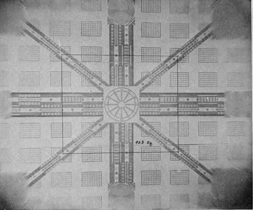
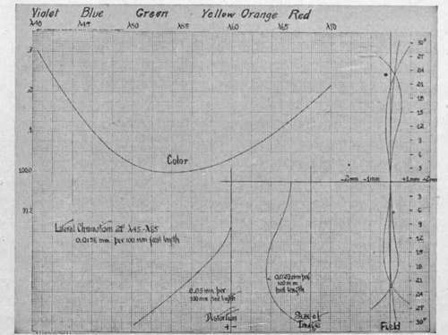

Lens Testing And Tolerances For Aerial Work
Description
This section is from the book "Airplane Photography", by Herbert E. Ives. Also available from Amazon: Airplane photography.
Lens Testing And Tolerances For Aerial Work
Simple and rapid comparative tests of lenses may be made by photographing a test chart, consisting of a large flat surface on which are drawn various combinations of geometrical figures—lines, squares, circles, etc.—calculated to show up any failures of defining power. For testing aerial lenses the chart should be as large as possible, so that it may be photographed at a distance great enough for the performance of the lens to be truly representative of its behavior on an object at infinite distance. This means in practice a chart of 4 or 5 meters side, to be photographed at a distance 20 to 30 times the focal length of the lens.
A typical photograph of such a chart is shown in Fig. 15. It reveals at a glance the more conspicuous lens errors.
Fig. 15. - Photograph of a lens testing chart, showing failure in defining power outside area for which the lens is calculated.
At the sides and corners the concentric circles show the lens's astigmatism, by the clear definition of the lines radial to the center of the field and their blurring in the tangential direction. The falling off in illumination with increasing distance from the center is also exhibited; and the blurring of all detail outside the rectangle for which the lens was calculated shows that spherical, chromatic, and other aberrations have become prohibitively large.
But the only complete test of a lens is the quantitative measurement of errors made on an optical bench. A point source of light, which may at will be made of any color of the spectrum, is used as the object and its image formed by the lens in a position where it can be accurately measured for location, size, and shape by a microscope. A chart giving the results of such a test is shown in Fig. 16. In the upper left-hand corner is shown the position of the focus for the different colors of the spectrum. Below this is recorded the lateral chromatism at 21 degrees, in terms of the difference in focus for a red and a blue ray. Below this again comes the distortion, or shift of the image from its proper position, for various angles (plotted at the extreme right) from the lens axis. To the right of this is the image size, at each angle, and finally, to the right of the diagram, are plotted the distances of the two astigmatic foci from the focal plane, together with the mean of the two foci, which practically determines the shape of the field.
An important point to notice is that these data are uniformly plotted in terms of a lens of 100 millimeters focal length irrespective of the actual focal length of the lens measured. Thus this particular chart is for a 50 centimeter lens but would be plotted on the same scale for a 25 or a 100 centimeter lens. Underlying this practice is the assumption that all the characteristics of lenses of the same design and aperture are directly proportional to their focal length. If this were so, then a 50 centimeter lens would give double the size of image that a 25 centimeter does, and so on. As a matter of fact, test shows that the size of the image does not increase so rapidly as the focal length; so that while the image size for a 25 centimeter lens would be, say, .05 millimeters per 100 millimeters focal length, it will be only .03 or .04 millimeters per 100 millimeters focal length for a 50 centimeter lens. The actual size of a point image will therefore be greater, though not proportionately greater.
Fig. 16. - Chart recording measurements of lens characteristics.
The chart presents tests on a good quality lens, and so gives a good idea of the permissible magnitude of the various errors. In many ways the most important figure is that for image size, including as it does the result of all the aberrations. In the example given, this varies from .075 to .15 mm. actual size. For the same type of lens of 25 centimeters focus this range will be from .05 to .10 mm. Since these are commonly used focal lengths, a good average figure for image size, commonly used in aerial photographic calculations, is 1/10 mm. In regard to astigmatic tolerances, the two astigmatic foci should not be separated at any point by more than 6 to 7 millimeters, and the mean of these should not deviate from the true flat field by more than Y2 millimeter, in each case the figures being based on the conventional 100 millimeters focal length. Distortion should not be over .08 millimeter at 18° or .20 millimeter at 24° from the axis (per 100 millimeters focal length).
Continue to:
- prev: Distortion
- Table of Contents
- next: Lens Aperture
Tags
camera, lens, airplane, aerial, film, exposure, photography, maps, birdseye